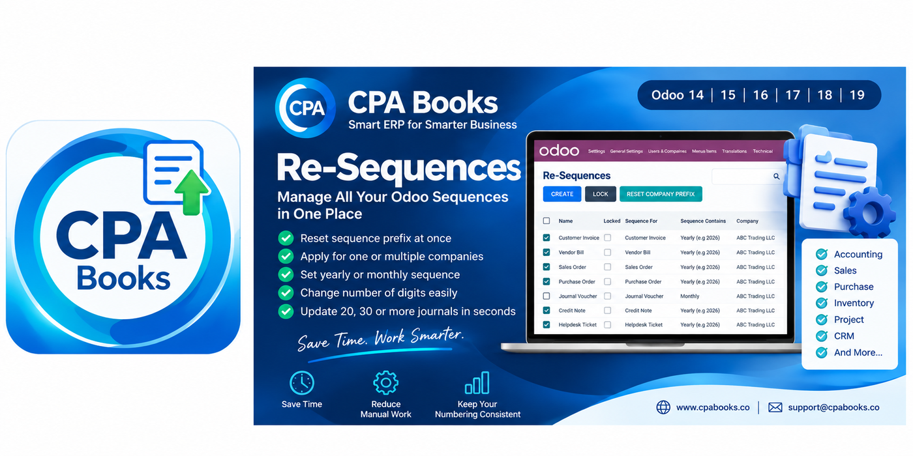
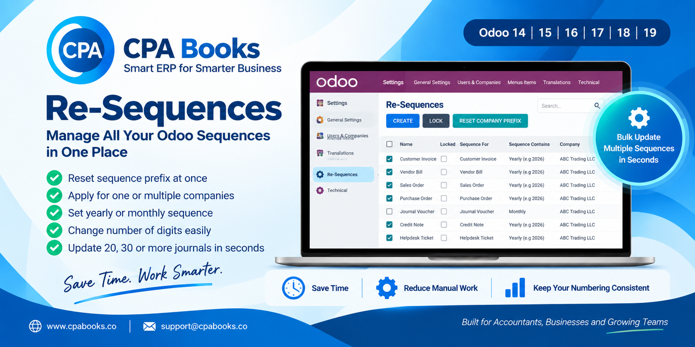

Save time and keep document numbering consistent across Accounting, Sales, Purchase, Inventory, Project and CRM — with bulk updates for one or many companies.

Stop editing sequences one by one. Re-Sequences gives you a single screen to create, lock and reset company prefixes across your Odoo documents.
Website: www.cpabooks.co
Email: support@cpabooks.co